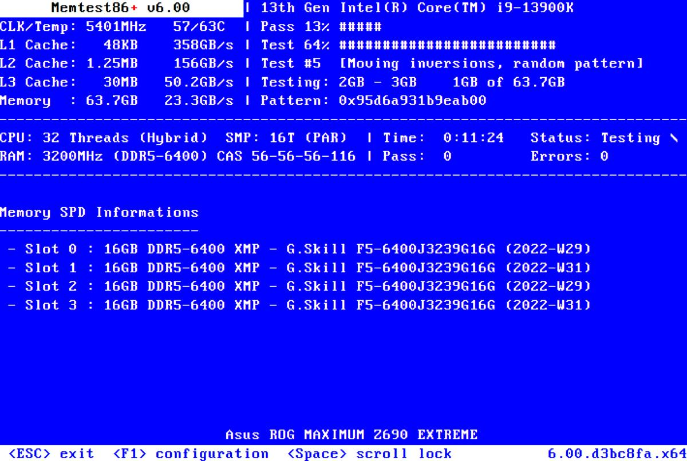

You said:
ChatGPT said:
m-boot — Ripresa del task
Ho verificato gli HEAD remoti correnti e recuperato l'handoff attivo.
La buona notizia è che la procedura di build richiesta è già presente nel repository m-boot, insieme alla documentazione per preparare il dispositivo fisico.
Repository m-boot
HEAD 9bb1bb64a9c1 — 30 ottobre 2026
.github/workflows/build-usb-image.yml
Manuale: manual/usb-image
Struttura dell'immagine
L'immagine prevista è un disco GPT da 2 GiB, da scrivere inizialmente sul dispositivo.
BIOS
EFI FAT32
exFAT
Partizione | Dimensione | Contenuto |
|---|---|---|
1 — EF02 | 10 MiB | GRUB BIOS x86_64 |
2 — EF00 | 512 MiB | UEFI x86_64 + ARM64 |
3 — 0700 | ~1,48 GiB | Loader e dati exFAT |
Il workflow usa un runner Ubuntu 24.04 x86_64, costruisce tutti e tre i target GRUB e produce l'immagine m-boot-combined.raw.zst, con checksum e archivio separato del loader.
Questo corrisponde alla scelta di un solo ambiente di build e installazione GRUB, senza installare GRUB sul computer dal quale verrà eseguito dd.
Build GitHub completata con successo
GitHub Actions — run 41035932123
Commit 9f6061667ff9 — 30 ottobre 2026
Tutti gli step risultano completati: installazione strumenti, generazione GPT, compressione, checksum e pubblicazione.
Apri il run GitHub e scarica l'artifactm-boot-combined-gpt
Artifact pubblicato · 24,3 MB · disponibile fino al 29 novembre 2026
L'artifact contiene:
m-boot-combined.raw.zst— disco completo compresso.m-boot-combined.raw.sha256— checksum dell'immagine non compressa.m-boot-loader.tar.zst— loader da ripristinare dopo la formattazione exFAT.SHA256SUMSeBUILD-INFO.txt— integrità e provenienza.
Validazione ottenuta: build reale e preparazione del disco riuscite su GitHub. Non è ancora una prova di avvio dei tre firmware con questa esatta immagine, né una prova su USB fisica.
Validazione finale: completata
GitHub Actions — run 41036546357
Questo run ha superato anche la simulazione di espansione da 2 a 4 GiB, verificando la conservazione delle partizioni BIOS/EFI, la ricreazione exFAT, il ripristino del loader e il controllo del filesystem.
Ho inoltre aggiornato il manuale operativo e sincronizzato l'handoff attivo.
Come utilizzare l'immagine
1. Scarica e verifica l'artifact
Su un host Linux con GitHub CLI:
gh run download 41036546357 \
--repo massimilianonardi-ai/m-boot \
--name m-boot-combined-gpt \
--dir m-boot-image
cd m-boot-image
sha256sum -c SHA256SUMS
zstd -dc m-boot-combined.raw.zst > m-boot-combined.raw
sha256sum -c m-boot-combined.raw.sha2562. Scrivi l'immagine sul disco
Dopo aver identificato con certezza il dispositivo fisico, su Linux:
DISK=/dev/disk/by-id/DISPOSITIVO-VERIFICATO
lsblk -o NAME,PATH,MODEL,SIZE,TYPE,LOG-SEC,MOUNTPOINTS "$DISK"
sudo blockdev --getss "$DISK"
# Solo dopo aver verificato che sia il disco corretto,
# non montato, con settori logici da 512 byte:
sudo dd if=m-boot-combined.raw of="$DISK" \
bs=4M conv=fsync status=progress
syncAttenzione: dd cancella i dati esistenti sull'intero dispositivo selezionato.
3. Utilizza tutta la capacità del disco
Il passaggio importante è che exFAT non viene esteso direttamente. Sul disco appena flashato, prima di copiarvi dati personali, la procedura:
sposta la GPT secondaria alla fine del dispositivo;
conserva intatte le partizioni BIOS ed EFI;
ricrea soltanto la terza partizione fino all'ultimo settore disponibile;
formatta nuovamente exFAT e ripristina il loader dall'archivio.
Le istruzioni complete, compresa la variante dd per macOS e i controlli di sicurezza per l'espansione su Linux, sono ora in manual/usb-image.
Stato del task: generazione e validazione virtuale del disco completate. Rimane la verifica sul dispositivo fisico e l'avvio reale della nuova immagine nei tre ambienti firmware. Non ho scritto su alcun dispositivo fisico.
You said:
ChatGPT said:
Pubblicazione dell'immagine: completata
L'immagine è stata generata su GitHub Actions e pubblicata direttamente nel repository pubblico m-boot, quindi ora è accessibile anche senza un account GitHub o l'accesso agli artifact di Actions.
Immagine completa BIOS + UEFI x86_64 + UEFI ARM64
2 GiB non compressi · 23 MB compressi
Immagine, loader, checksum e informazioni di buildIl workflow Build complete bootable GPT image è terminato con esito positivo. Ha pubblicato anche l'archivio del loader, di circa 12,4 MB, necessario per ricreare exFAT dopo l'ampliamento.
La pubblicazione avviene mediante un normale commit Git, senza force push. Le immagini rimangono nel repository anche dopo la scadenza degli artifact temporanei.
Installatore automatico: implementato
Ho creato il comando eseguibile usb-install.sh con supporto Linux e macOS, incluso Apple Silicon.
L'utilizzo previsto è:
git clone https://github.com/massimilianonardi-ai/m-boot.git
cd m-boot
./usb-install.shLo script gestisce l'intera procedura:
- Verifica checksum e integrità dell'immagine pubblicata.
- Elenca e numera i dischi fisici interni ed esterni.
- Mostra modello, capacità, identificativo, partizioni, filesystem, etichette e altre informazioni disponibili sul dispositivo scelto.
Chiede di confermare digitando
ERASEseguito dall'identificativo esatto del disco.Smonta i volumi consentiti e scrive automaticamente l'immagine tramite
dd.- Sposta la GPT secondaria, espande la terza partizione fino allo spazio disponibile e la formatta exFAT.
- Ripristina il loader, verifica i moduli delle tre architetture e controlla il filesystem.
Non occorre eseguire manualmente dd, GParted, sgdisk o i comandi di formattazione. Se un dispositivo è in uso dal sistema o una condizione di sicurezza non è soddisfatta, lo script interrompe l'operazione invece di forzarla. Su macOS può installare automaticamente gdisk tramite Homebrew, quando disponibile.
Risultati della validazione
Linux + macOS
Sono riusciti i controlli della build reale, della pubblicazione, dell'integrità dei file e delle interfacce native Linux/macOS, compresa l'enumerazione macOS in sola lettura.
Resta una verifica importante: lo script completo non è ancora stato eseguito su un dispositivo fisico con dati sacrificabili. Non considero pertanto validati il dd fisico, il ridimensionamento sul dispositivo reale e il successivo avvio BIOS/UEFI.
Ho aggiornato anche manual/usb-image e l'handoff attivo di m-boot. Il repository corrente è al commit f14ebf7ef3b62.
Il prossimo passaggio è la prova reale usando direttamente ./usb-install.sh, senza istruzioni manuali di partizionamento.
You said:
ChatGPT said:
Ho individuato la causa nel codice: usb-install.sh esegue effettivamente
gzip -dc images/m-boot-combined.raw.gz > /tmp/.../m-boot-combined.rawQuesto richiede 2 GiB di quota per un file che non serve conservare. L’errore è avvenuto prima della selezione del dispositivo e di qualsiasi scrittura su disco.
La soluzione è eliminare quel file temporaneo, mantenendo le verifiche SHA256 e aggiungendo una verifica dei dati effettivamente scritti sul dispositivo prima di modificare le partizioni.
La regressione è stata riprodotta e superata in GitHub Actions: ho eseguito l’installatore reale con un limite artificiale di 16 MiB per file, usando un terminale simulato e annullando alla scelta del disco.
Il controllo ha completato la verifica dell’immagine da 2 GiB, ha visualizzato l’elenco numerato dei dispositivi ed è uscito senza scrivere nulla. Questo conferma che la fase che falliva sul tuo host non richiede più un file temporaneo da 2 GiB.
Anche i controlli macOS sono riusciti. La scrittura fisica e la successiva verifica del dispositivo restano da provare sul supporto reale.
La correzione è stata pubblicata nel repository al commit c536dd57e4b94e91239f79247730aa6b48788932.
Sul tuo vmdev puoi riprendere con:
cd /m/src/git/m-boot
git pull --ff-only
./usb-install.shNon serve liberare 2 GiB in /tmp, né modificare la configurazione delle quote. Lo script continua a chiedere la selezione del disco e la conferma esplicita prima di qualsiasi operazione distruttiva.
Ho aggiornato anche il manuale e l'handoff. Il problema di decompressione è risolto e verificato in CI; resta da validare la scrittura completa su un dispositivo fisico.
You said:
ChatGPT said:
La scrittura della chiavetta è riuscita: il log conferma la verifica SHA256 dopo dd, l’ampliamento della partizione e il controllo exFAT. Non dimostra ancora che il firmware riesca ad avviare il loader.
Ho verificato il motivo del layout attuale: boot/init cerca /m/boot/loader/init su un filesystem esterno e build.sh lo colloca esplicitamente in data/m/boot/loader. Non è una necessità di GRUB: possiamo mettere lo stesso loader sulla ESP FAT32, insieme agli eseguibili EFI, mantenendo il caricamento dinamico dei moduli.
La separazione corretta che adotterò è: partizione BIOS riservata, ESP con tutto m-loader, exFAT dedicata a ISO, backup e altri dati. Non occorre modificare le dimensioni delle partizioni.
Ho completato la correzione e pubblicato la nuova immagine nel repository.
La struttura adesso è:
Disco GPT
Partizione 1 — BIOS Boot (10 MiB)
GRUB BIOS embedded
Partizione 2 — ESP FAT32 (512 MiB)
EFI/BOOT/BOOTX64.EFI
EFI/BOOT/BOOTAA64.EFI
m/boot/loader/ — init, GUI, temi e moduli GRUB
Partizione 3 — exFAT (spazio restante)
Vuota inizialmente, destinata a ISO, backup e dati
Ho aggiornato build.sh, install.sh, l'installatore USB, le immagini QEMU, i tre pacchetti GRUB pubblicati, i workflow e i manuali.
Validazione completata: la nuova immagine pubblica è stata montata in CI e sono stati verificati il loader sulla ESP, i moduli delle tre architetture e la partizione exFAT vuota. Sono riusciti anche la build completa e i test Linux/macOS. L'avvio firmware della nuova immagine resta da verificare.
Puoi quindi aggiornare e ricreare la chiavetta:
cd /m/src/git/m-boot
git pull --ff-only
sudo ./usb-install.shLo script richiederà nuovamente la conferma distruttiva e gestirà tutto automaticamente. La chiavetta che hai appena preparato contiene ancora il vecchio layout: è necessario riscriverla per ottenere quello corretto.
Nuova immagine pubblica · Validazione della nuova immagine
Commit corrente m-boot: 532d2e6af08ef9b0f5eb2d1d6a9dde059ea7f546.
You said:
ChatGPT said:
D'accordo. Ho recepito questa distinzione come criterio definitivo per m-boot: la collocazione dipende dalla responsabilità del contenuto, non semplicemente dalle sue dimensioni.
Partizione | Contenuto |
|---|---|
ESP FAT32 — 512 MiB | GRUB BIOS/UEFI, |
Dati exFAT — spazio restante | Tool esterni, immagini ISO, macchine virtuali, backup e altri contenuti voluminosi |
In particolare, anche i moduli GRUB caricati dinamicamente restano sulla ESP: sono parte del sistema di avvio, non tool esterni.
Ho verificato che l'implementazione corrente rispetta già questa separazione. Ho quindi aggiornato i quattro manuali interessati e l'handoff attivo, senza modificare codice o immagine disco.
Commit m-boot: 18ec409bc2745be8d24f3240a63c702521714380.
Non è necessario rigenerare l'immagine per questa precisazione: quella attuale contiene già il loader completo sulla ESP e lascia inizialmente vuota la exFAT.
You said:
ChatGPT said:
Anche la seconda installazione fisica è riuscita, questa volta con il layout corretto: m-loader sulla ESP e partizione exFAT riservata ai dati.
Verifica | Risultato |
|---|---|
Immagine pubblicata e checksum | Superata |
Scrittura dei 2 GiB sulla USB | Superata |
Lettura di controllo SHA256 dal dispositivo | Superata |
GPT e ampliamento della partizione dati | Superati |
Formattazione exFAT | Superata |
Controllo filesystem |
|
Gli avvisi sgdisk sull'allineamento a 2048 settori non sono errori: la partizione 3 è stata estesa fino all'ultimo settore utilizzabile, e la verifica GPT è riuscita.
Resta da verificare l'avvio effettivo su BIOS/UEFI. Inoltre il log non mostra una lettura diretta dei file della ESP dopo l'installazione, benché l'immagine pubblicata fosse già stata verificata in CI.
Ho registrato il risultato come PASS dell'installazione su dispositivo USB fisico, associato alla revisione esatta 18ec409 di m-boot.
L'handoff è aggiornato nel commit 8cd2d56 di rumiai-dev. Non ho modificato il codice e non serve riscrivere nuovamente la chiavetta.
Il prossimo passo è verificare direttamente i file della ESP sulla chiavetta e provare l'avvio, iniziando da UEFI x86_64. Il test di installazione è concluso con successo; quello di avvio rimane aperto.
You said:
ChatGPT said:
Ho aggiunto al repository tests/qemu-published-test.sh, che usa la stessa immagine pubblicata utilizzata per preparare la chiavetta, senza modificare /dev/sda.
Per eseguire il test completo sul tuo vmdev:
cd /m/src/git/m-boot
git pull --ff-only
./tests/qemu-published-test.shIl test esegue, nell'ordine, BIOS x86_64, UEFI x86_64 e UEFI ARM64, sempre sulla medesima immagine. Per ogni piattaforma apre QEMU: controlla che compaia il menu grafico di m-loader, prova Inspect boot context, chiudi la finestra e conferma PASS oppure FAIL nel terminale.
L'immagine temporanea è privata, sparsa per limitare l'occupazione del disco e cancellata al termine. QEMU usa la modalità snapshot, quindi le eventuali scritture del guest non vengono conservate.
La CI ha già superato la preparazione reale dell'immagine, le verifiche SHA256, il controllo degli argomenti e la pulizia. Gli avvii grafici devono ancora essere osservati: il test non li dichiara riusciti soltanto perché QEMU parte.
Il test è stato pubblicato nel commit 9bfeeb41484f9fae6b89bc33b0a989901317f6ca.
GitHub Actions — validazione superata · Manuale del test QEMU
Puoi anche verificare una singola piattaforma con --target arm64-efi, oppure utilizzare --output DIR per scegliere il filesystem che ospita l'immagine temporanea, senza usare /tmp.
Ho aggiornato l'handoff. Il prossimo risultato utile è l'esito visivo delle tre finestre QEMU, che permetterà di distinguere eventuali problemi specifici di BIOS, UEFI x86_64 o UEFI ARM64.
You said:
ChatGPT said:
Per m-boot costruirei una raccolta di ISO che copra quattro esigenze: ripristino d'emergenza, clonazione e recupero dati, installazione di sistemi operativi e installazione di piattaforme server/NAS.
Ho verificato le distribuzioni ufficiali al 30 ottobre 2026. Ci sono tre aggiornamenti importanti:
Ubuntu 26.04.1 LTS è disponibile sia Desktop sia Server, per x86_64 e ARM64.
Ubuntu+2Proxmox VE 9.2 dispone anche di un installer ARM64 ufficiale, oltre a quello x86_64.
Proxmox Virtual Environment+1TrueNAS SCALE oggi si chiama TrueNAS Community Edition: la versione stabile raccomandata è 25.10.7, mentre TrueNAS 27 è ancora in release candidate.
TrueNAS - Open Enterprise Storage+2
1. Le migliori ISO di recovery
Questa è la selezione che includerei, in ordine di utilità pratica per amministrazione e ripristino di server e workstation.
Priorità | Strumento | Utilizzo principale | Download ufficiale |
|---|---|---|---|
Essenziale | SystemRescue 13.02 | Recupero Linux, filesystem, dischi, LVM, RAID e interventi da terminale | |
Essenziale | Clonezilla Live 3.3.3-37 | Clonazione e immagini complete di dischi o partizioni | |
Essenziale | Rescuezilla 2.6.2 | Backup e ripristino dischi con interfaccia grafica, compatibilità con immagini Clonezilla | |
Alta | GParted Live 1.8.1-6 | Riparazione layout, ridimensionamento e gestione partizioni | |
Alta | Grml 2026.09 | Recovery avanzato, diagnosi e amministrazione Linux; disponibile anche ARM64 | |
Alta | Memtest86+ 9.00 | Diagnostica della RAM prima di attribuire guasti a dischi o sistemi operativi | |
Opzionale | Finnix 251 | Live Linux minimale da terminale con numerose utilità di manutenzione |
Le versioni sono quelle riportate dalle rispettive pagine ufficiali.
Scelta di fondo: SystemRescue è il primo ambiente da avere; Clonezilla e Rescuezilla coprono il recupero da immagini; GParted semplifica la gestione grafica delle partizioni. Grml è particolarmente interessante per amministrazione avanzata e ARM64.
Per il recupero di dati da un disco che manifesta errori fisici, darei precedenza a una copia con ddrescue prima di eseguire operazioni di riparazione sul filesystem. Anche gli strumenti di clonazione e partizionamento devono essere utilizzati su dispositivi scelti esplicitamente.
2. ISO d'installazione: sistemi operativi, hypervisor e NAS
Sistema | Edizione da includere | Architettura | Download ufficiale |
|---|---|---|---|
Ubuntu Desktop | 26.04.1 LTS | x86_64, ARM64 | |
Ubuntu Server | 26.04.1 LTS | x86_64, ARM64 | |
Proxmox VE | 9.2-1 | x86_64, ARM64 | |
Proxmox Backup Server | 4.2-1 | x86_64 | |
TrueNAS Community Edition | 25.10.7 Stable | x86_64 | |
Debian | 13.7 Trixie | x86_64, ARM64 | |
XCP-ng | 8.3 LTS, ISO aggiornata agosto 2026 | x86_64 | |
OPNsense | ISO DVD installer | x86_64 | |
AlmaLinux | 10.1, Minimal o DVD | x86_64, ARM64 |
Versioni e disponibilità architetturale verificate sui siti dei produttori.
Per la tua raccolta darei particolare importanza a Ubuntu Server, Proxmox VE, TrueNAS e Debian. XCP-ng è l'alternativa più interessante a Proxmox per virtualizzazione Xen; Proxmox Backup Server merita una ISO dedicata per installazione o ricostruzione di un'infrastruttura di backup.
Per TrueNAS sceglierei la 25.10.7 stabile, evitando la 27-RC.1 sui NAS di produzione. Per Ubuntu conserverei entrambe le architetture, ma userei principalmente la ISO Server per nuove installazioni e la Desktop anche come ambiente live generico di intervento.
3. Altri strumenti che aggiungerei
Strumento | Perché è interessante | Download |
|---|---|---|
Super Grub2 Disk | Avviare sistemi presenti su dischi il cui bootloader è danneggiato; utile anche per studiare le capacità di rilevamento GRUB | |
Hiren's BootCD PE | Recupero e diagnostica Windows, strumenti grafici per NTFS e manutenzione PC x64 | |
netboot.xyz | Avvio via rete di numerosi installer e strumenti, evitando di conservare tutte le ISO localmente |
Questi sono complementari: Super Grub2 Disk è particolarmente pertinente allo sviluppo di m-loader, mentre netboot.xyz potrebbe diventare interessante per il futuro supporto all'avvio da rete.
4. Come organizzerei la raccolta per m-boot
La mia selezione iniziale sarebbe:
Recovery: SystemRescue, Clonezilla, Rescuezilla, Grml, GParted, Memtest86+, Super Grub2 Disk.
Installazione: Ubuntu Server 26.04.1 per entrambe le architetture, Ubuntu Desktop x86_64, Debian 13.7, Proxmox VE 9.2 per entrambe le architetture, Proxmox Backup Server 4.2, TrueNAS 25.10.7 e XCP-ng 8.3.
Seconda fase: Ubuntu Desktop ARM64, OPNsense, AlmaLinux, Hiren's BootCD PE e netboot.xyz.
Tutte le ISO andrebbero sulla partizione exFAT, lasciando sulla ESP soltanto m-loader e i suoi componenti interni.
Attenzione: avvio delle ISO tramite m-loader
Qui c'è una distinzione tecnica fondamentale per il progetto: avere una ISO sulla partizione dati non significa che GRUB possa avviarla automaticamente.
GRUB può leggere un'immagine ISO tramite loopback, ma il kernel e l'initramfs del sistema avviato devono poi essere capaci di ritrovare il supporto d'installazione. Il manuale GRUB documenta espressamente questo limite.
Attualmente, nel repository m-boot, le ricette storiche di avvio ISO non sono ancora state reintegrate e validate nel nuovo loader. Quindi considero i prodotti elencati candidati da supportare, non ISO già certificate per l'avvio diretto da m-boot.
Per sviluppare e verificare il multiboot partirei da SystemRescue, Ubuntu Desktop, Ubuntu Server e Clonezilla; proseguirei con Proxmox, TrueNAS e gli altri installer, che possono richiedere meccanismi diversi dalla semplice lettura ISO con GRUB.
L'obiettivo dovrebbe essere che ogni ISO dichiarata supportata non si limiti a mostrare il proprio menu, ma raggiunga effettivamente l'ambiente di recupero oppure l'installer funzionante, senza perdere l'accesso ai file necessari durante il boot.
You said:
ChatGPT said:
Sì, è possibile ottenere qualcosa di molto simile a una ISO scritta direttamente con dd, mantenendo contemporaneamente la partizione exFAT. Ma non basta combinare dd e chainloader: serve un meccanismo che presenti l'immagine al firmware e, quando necessario, al sistema operativo come un dispositivo virtuale.
Per m-boot è un'ipotesi molto interessante, perché potrebbe ridurre notevolmente la necessità di sviluppare una ricetta di avvio diversa per ogni ISO.
1. Le tre situazioni sono differenti
Tecnica | Cosa succede | Risultato |
|---|---|---|
| Sovrascrive il layout del disco con quello dell'immagine | Avvio nativo previsto dalla ISO, se compatibile |
Copia della ISO sulla exFAT | La ISO rimane un file | GRUB può leggerne il contenuto, ma non è un disco firmware |
ISO sulla exFAT + emulazione del dispositivo | La ISO viene presentata come disco o CD virtuale | Può consentire l'avvio tramite il bootloader originale della ISO |
La terza strada è proprio il principio utilizzato da Ventoy. Il progetto supporta ISO, IMG, VHD e altri formati su una partizione dati, con avvio BIOS e UEFI anche ARM64.
2. Perché GRUB loopback + chainloader non basta
GRUB può creare un dispositivo logico da un file:
loopback loop ($data)/iso/ubuntu.iso
ls (loop)/Questo permette a GRUB di leggere i file all'interno della ISO. Non significa però che il firmware o il kernel successivamente avviato vedano lo stesso dispositivo.
La documentazione ufficiale GRUB precisa che il sistema operativo deve poter ritrovare autonomamente la propria immagine e che il semplice chainloading non risolve generalmente il problema.
Un'emulazione più completa richiede meccanismi diversi:
BIOS: intercettazione o emulazione degli accessi al disco, tradizionalmente attraverso INT 13h.
UEFI: esposizione di un dispositivo virtuale tramite i servizi/protocolli firmware, con corretta gestione del passaggio al sistema operativo.
Kernel e initramfs: capacità di continuare ad accedere alla ISO originale quando l'emulazione del firmware non è più disponibile.
È soprattutto quest'ultimo passaggio che rende impegnativa una soluzione davvero generale.
3. Si può scrivere la ISO grezza dentro lo spazio exFAT?
In linea teorica si potrebbero riservare blocchi fisici e costruire una mappatura verso di essi. Ma scrivere semplicemente con dd direttamente su /dev/sda3 distruggerebbe la struttura exFAT; scrivere in settori apparentemente liberi senza riservarli correttamente rischierebbe di corromperla.
Inoltre, una ISO ibrida scritta dentro una singola partizione non equivale a una ISO scritta sull'intero disco: gli offset, le tabelle delle partizioni e le strutture di avvio possono essere differenti.
L'approccio più interessante sarebbe quindi conservare le immagini come normali file exFAT e gestire la traduzione fra i loro blocchi e quelli del dispositivo virtuale. Ventoy dimostra che non è nemmeno obbligatorio che i file siano fisicamente contigui.
4. Cosa valuterei per m-boot
Possibile percorso tecnico, ancora da verificare
ESP FAT32
GRUB → m-loader → avvio selezionato
Metodo nativo
Kernel + initramfs con parametri specifici
Disco virtuale
Emulazione ISO/IMG + bootloader originale
exFAT
ubuntu.iso · proxmox.iso · truenas.iso · ...
Terrei due modalità complementari:
Avvio nativo GRUB, più semplice, per le distribuzioni che supportano esplicitamente il caricamento da ISO.
Emulazione del dispositivo ISO, più generale ma decisamente più complessa, da studiare partendo dai meccanismi già implementati da Ventoy.
Non introdurrei ancora una nuova architettura in m-loader. Prima realizzerei un PoC su QEMU con una ISO Ubuntu e una ISO Proxmox, verificando non soltanto la comparsa del menu iniziale, ma l'arrivo all'installer vero e proprio. Successivamente proverei TrueNAS e le tre modalità firmware.
La conclusione è che l'idea è tecnicamente realizzabile, ma l'equivalenza universale con dd non è garantita. Il vantaggio potenziale è grande: un unico disco multiboot dove aggiungere una ISO significa soltanto copiare un file, senza modificare partizioni né ricostruire il sistema di avvio.
You said:
ChatGPT said:
Ho recuperato i riferimenti SHA256 per tutti e 22 i file che hai elencato. Ho anche preparato un file compatibile con sha256sum -c, con i nomi e i percorsi esattamente come risultano dal tuo find.
Non ho ancora verificato materialmente i file sulla chiavetta: per dichiararli integri dobbiamo eseguire il controllo sul tuo vmdev.
1. File SHA256 pronto
Scarica il manifest SHA256 dei 22 file
22 hash SHA256 completi · 16 ISO · 3 ZIP · 1 BZ2 · 2 EFI
I valori provengono dalle distribuzioni ufficiali: Ubuntu, Proxmox, TrueNAS, Clonezilla, GParted, Grml, SystemRescue, Finnix, Hiren's, Memtest86+, OPNsense, Super Grub2 Disk, Rescuezilla e netboot.xyz.
Per eseguire la verifica, salva il manifest nella directory principale della chiavetta e lancia:
cd /run/media/admino/MBOOTDATA
sha256sum -c ./m-boot-payload-SHA256SUMS-2026-10-30.txtOtterrai una riga per ogni file, con OK oppure FAILED.
Per esempio, alcuni degli hash reperiti sono:
File | SHA256 ufficiale |
|---|---|
|
|
|
|
|
|
|
|
|
|
Una precisazione importante: per i tre file netboot.xyz ho usato i digest pubblicati nella release GitHub 3.0.3. Se li hai scaricati dal canale aggiornato continuamente, gli SHA256 potrebbero essere diversi pur essendo file validi. In quel caso occorrerà identificare la build precisa.
2. Organizzazione consigliata
Prima eseguirei la verifica di integrità, senza spostare nulla. Successivamente proporrei questa struttura logica nella partizione exFAT:
MBOOTDATA — exFAT
m/boot/
iso/
recovery/
SystemRescue, Grml, Clonezilla, Rescuezilla, GParted, Finnix, Hiren's, Super Grub2 Disk
install/
Ubuntu, Proxmox VE, Proxmox Backup Server, TrueNAS, OPNsense
diagnostics/
Memtest86+ (dopo estrazione)
network/
netboot.xyz.iso
efi/
netboot.xyz.efi, netboot.xyz-arm64.efi
archives/
ZIP originali di Memtest86+ e BZ2 originale di OPNsense, se vuoi conservarli
Non considero questi nomi di sottodirectory ancora un contratto definitivo di m-boot: l'attuale loader/init non ha ancora implementato la discovery delle ISO. L'aspetto importante è mantenere una radice comune e lasciare a m-loader la responsabilità di scandire le sottodirectory.
La distinzione architetturale resta: ESP FAT32 = sistema interno di avvio; exFAT = payload esterni. Gli EFI di netboot.xyz restano quindi fra gli strumenti esterni, senza copiarli automaticamente nella ESP.
3. Memtest86+: quali file scompattare
Hai scaricato tre archivi diversi. Non servono necessariamente tutti una volta installati gli strumenti:
Archivio | Utilizzo |
|---|---|
| ISO standard per x86_64 |
| ISO predisposta per avvio in ambiente GRUB |
| Binari per modalità di avvio differenti |
Verifica innanzitutto che siano integri. Poi puoi ispezionare il contenuto senza estrarlo:
cd /run/media/admino/MBOOTDATA
unzip -t m/boot/mt86plus_9.00.binaries.zip
unzip -t m/boot/mt86plus_9.00_x86_64.grub.iso.zip
unzip -t m/boot/mt86plus_9.00_x86_64.iso.zip
unzip -Z -1 m/boot/mt86plus_9.00.binaries.zipPer m-boot inizierei dalla variante GRUB, ma la validerei in QEMU prima di considerarla supportata. Conserverei inizialmente anche la ISO standard.
4. OPNsense: diagnosticare il problema di decompressione
Il tuo file è un archivio bzip2, non una ISO ancora pronta all'avvio.
Controlla prima che la copia sulla chiavetta sia corretta:
cd /run/media/admino/MBOOTDATA
sha256sum m/boot/OPNsense-26.7-dvd-amd64.iso.bz2
bzip2 -tv m/boot/OPNsense-26.7-dvd-amd64.iso.bz2
df -h .Se lo SHA256 corrisponde al valore ufficiale e bzip2 -t termina correttamente, il download e la copia compressa sono integri. A quel punto prova la decompressione senza eliminare l'originale:
bzip2 -dc m/boot/OPNsense-26.7-dvd-amd64.iso.bz2 \
> m/boot/iso/OPNsense-26.7-dvd-amd64.iso.part &&
mv m/boot/iso/OPNsense-26.7-dvd-amd64.iso.part \
m/boot/iso/OPNsense-26.7-dvd-amd64.isoLa ISO viene rinominata soltanto dopo che la decompressione è terminata correttamente. Se fallisce, l'eventuale .part è incompleto e non deve essere usato.
5. Cosa ci conferma la verifica
Se tutti e 22 gli SHA256 restituiscono OK, avremo una conferma molto forte dell'integrità dei contenuti presenti sulla chiavetta rispetto alle versioni di riferimento. Gli hash da soli non sostituiscono la verifica delle firme digitali dei produttori quando è richiesta una garanzia di autenticità.
Per il momento non modificherei né la struttura della chiavetta né il repository.
Il passo più utile adesso è eseguire il manifest e riportarmi il risultato. Se qualche file restituisce FAILED, distingueremo un download differente da un trasferimento realmente corrotto; poi potremo riorganizzare i file verificati e affrontare il caricamento delle ISO da m-loader.
You said:
ChatGPT said:
Puoi verificare direttamente tutti i 22 file presenti sulla chiavetta, senza spostarli o modificarli.
1. Scarica il file con gli SHA256:
Scarica m-boot-payload-SHA256SUMS-2026-10-30.txt
2. Copialo nella directory principale della chiavetta, cioè /run/media/admino/MBOOTDATA/, allo stesso livello della directory m.
3. Su vmdev, esegui:
cd /run/media/admino/MBOOTDATA
sha256sum -c m-boot-payload-SHA256SUMS-2026-10-30.txtVedrai un risultato simile a questo:
m/boot/iso/clonezilla-live-20260913-resolute-amd64.iso: OK
m/boot/iso/finnix-251.iso: OK
m/boot/iso/gparted-live-1.8.1-6-amd64.iso: OK
...
m/boot/efi/netboot.xyz.efi: OKInterpretazione:
OK: il contenuto corrisponde all'hash di riferimento.FAILED: il contenuto è differente; potrebbe essere una versione diversa oppure un file corrotto.No such file or directory: il file non si trova nel percorso previsto.
Se vuoi conoscere anche l'esito complessivo, subito dopo esegui:
echo $?0 significa che tutte le verifiche sono riuscite; un valore diverso indica almeno un problema.
Non serve sudo e non viene modificato alcun file. La verifica potrebbe richiedere un po' di lettura dalla USB perché calcola l'hash integrale di tutte le ISO.
Incollami il risultato completo: analizzeremo gli eventuali FAILED prima di procedere alla riorganizzazione.
You said:
ChatGPT said:
Il controllo è andato bene per la maggior parte della raccolta:
Verificati
18
Differenti
4
Totale
22
Non cancellerei né riscaricherei ancora nessuno dei quattro file. FAILED significa che l'hash calcolato non coincide con quello atteso, non necessariamente che il file sia danneggiato.
I file da approfondire sono:
HBCD_PE_x64.isonetboot.xyz.isonetboot.xyz.efinetboot.xyz-arm64.efi
Tutti gli altri, inclusi Ubuntu, Proxmox, TrueNAS, SystemRescue, gli ZIP di Memtest86+ e l'archivio OPNsense, hanno superato il controllo.
1. Identifichiamo le quattro copie
Ho ricontrollato il manifest: per Hiren's BootCD PE contiene lo SHA256 pubblicato dal sito ufficiale per la versione 1.0.8, mentre per netboot.xyz contiene i digest della release 3.0.3.
Sul tuo vmdev esegui:
cd /run/media/admino/MBOOTDATA
for f in \
m/boot/iso/HBCD_PE_x64.iso \
m/boot/iso/netboot.xyz.iso \
m/boot/efi/netboot.xyz.efi \
m/boot/efi/netboot.xyz-arm64.efi
do
echo "===== $f ====="
stat -c 'Dimensione: %s byte' "$f"
sha256sum "$f"
done
echo "===== HIREN MD5 ====="
md5sum m/boot/iso/HBCD_PE_x64.isoPer aiutarti a interpretare il risultato, queste sono le dimensioni esatte delle distribuzioni di riferimento:
File | Dimensione ufficiale |
|---|---|
Hiren's BootCD PE 1.0.8 | 3.291.686.912 byte |
netboot.xyz.iso 3.0.3 | 2.428.928 byte |
netboot.xyz.efi 3.0.3 | 1.185.280 byte |
netboot.xyz-arm64.efi 3.0.3 | 1.185.792 byte |
Per Hiren's l'MD5 ufficiale è 45baab64b088431bdf3370292e9a74b0.
2. Come distinguere il download dal trasferimento
Se hai ancora sul computer i file originali scaricati, il controllo più importante è confrontare il loro SHA256 con quello sulla chiavetta.
Hash originale = hash USB: il trasferimento è riuscito; resta da identificare quale versione hai scaricato.
Hash originale ≠ hash USB: il file è stato alterato durante o dopo la copia; dovremo ripristinarlo.
Originale non più disponibile: possiamo identificare il file attraverso hash, dimensione e fonte del download, oppure riscaricare la release precisa e verificarla.
Per netboot.xyz possiamo usare come riferimento la release ufficiale 3.0.3.
Per Hiren's manteniamo il riferimento alla pagina ufficiale della ISO.
Incollami l'output del comando qui sopra. Confrontando dimensioni, SHA256 e MD5 potremo decidere esattamente quali file conservare e quali eventualmente sostituire, senza ripetere il controllo delle altre 18 immagini già verificate.
You said:
ChatGPT said:
Per m-boot manterrei i file EFI esterni nella partizione exFAT, separati dalle ISO. La struttura che hai già utilizzato è corretta.
Organizzazione consigliata
MBOOTDATA/ (exFAT)
└── m/
└── boot/
├── iso/
│ ├── recovery/
│ ├── install/
│ └── diagnostics/
│
└── efi/
├── netboot.xyz.efi
└── netboot.xyz-arm64.efiI due eseguibili hanno destinazioni differenti:
File | Architettura | Modalità |
|---|---|---|
| x86_64 | UEFI |
| ARM64 | UEFI |
Se in futuro aggiungeremo molti eseguibili EFI, potremo raggrupparli per prodotto, ad esempio in efi/netboot.xyz/, mantenendo i nomi originali.
Attenzione alla ESP
È importante non confondere i file EFI esterni con quelli di avvio di m-boot.
ESP — FAT32
Sistema di avvio interno di m-boot
EFI/BOOT/BOOTX64.EFI
EFI/BOOT/BOOTAA64.EFI
m/boot/loader/...MBOOTDATA — exFAT
Programmi EFI e ISO esterni
m/boot/efi/netboot.xyz.efi
m/boot/efi/netboot.xyz-arm64.efi
m/boot/iso/...Non copierei netboot.xyz.efi sotto EFI/BOOT/ della ESP: quei nomi sono già utilizzati dal nostro bootloader.
Avvio dal menu di m-loader
Il comportamento che vorrei ottenere è:
m-loader
└── EFI applications
├── netboot.xyz (x86_64)
└── netboot.xyz (ARM64)m-loader potrebbe identificare l'architettura corrente e mostrare soltanto gli eseguibili compatibili, avviandoli tramite il chainloader di GRUB.
Due precisazioni: il loader attuale non ha ancora integrato questa funzionalità; inoltre il chainloading di eseguibili EFI conservati su exFAT deve essere verificato realmente, perché alcune applicazioni possono dipendere dai protocolli filesystem e rete offerti dal firmware.
Per ora, quindi, non devi spostare i due EFI. La loro posizione è già adatta. Rimane soltanto da chiarire perché entrambi hanno fallito la precedente verifica SHA256 prima di considerarli pronti all'uso.
You said:
ChatGPT said:
Perfetto, ora tutti e 9 i file di netboot.xyz risultano verificati utilizzando il manifest SHA256 della distribuzione che hai scaricato. Possiamo quindi considerare risolta la precedente discrepanza dei tre hash netboot.xyz.
Per OPNsense, dato che l'archivio .bz2 ha già superato la verifica SHA256, ti propongo di estrarre la ISO, calcolarne l'hash e aggiungerlo al manifest esistente.
Esegui questo blocco su vmdev:
cd /run/media/admino/MBOOTDATA
(
set -eu
src="m/boot/OPNsense-26.7-dvd-amd64.iso.bz2"
dst="m/boot/iso/OPNsense-26.7-dvd-amd64.iso"
tmp="$dst.part"
manifest="m-boot-payload-SHA256SUMS-2026-10-30.txt"
# Non sovrascrivere file già esistenti
if [ -e "$dst" ] || [ -e "$tmp" ]; then
echo "ERRORE: ISO o file temporaneo già esistente"
exit 1
fi
# Controlla l'integrità dell'archivio
bzip2 -tv "$src"
# Estrai mantenendo l'archivio originale
trap 'rm -f -- "$tmp"' 0
bzip2 -dc "$src" > "$tmp"
mv -- "$tmp" "$dst"
# Calcola SHA256 e aggiungilo al manifest
sha256sum "$dst" | tee -a "$manifest"
# Verifica immediatamente la nuova voce
tail -n 1 "$manifest" | sha256sum -c -
)Se tutto funziona, l'ultima riga sarà:
m/boot/iso/OPNsense-26.7-dvd-amd64.iso: OKCosa garantisce: l'archivio originale non viene eliminato, non vengono sovrascritte ISO esistenti e il manifest viene aggiornato soltanto dopo un'estrazione riuscita. L'hash aggiunto è quello calcolato localmente sulla ISO estratta, non un secondo checksum ufficiale indipendente; l'attendibilità deriva dall'archivio .bz2 già verificato.
Dopo questa operazione restano da sistemare gli hash di Hiren's e le vecchie voci netboot.xyz nel manifest originale. Non conviene rieseguire il controllo completo prima di aver aggiornato quei riferimenti.
You said:
ChatGPT said:
Le tre distribuzioni che hai scaricato contengono lo stesso Memtest86+ 9.00, ma sono confezionate per modalità di avvio differenti. Per m-boot la più interessante è proprio quella con i binari, perché permette di avviare il programma senza passare attraverso una ISO.
1. Differenze tra le tre distribuzioni
Archivio | Contenuto e utilizzo | Utilità per m-boot |
|---|---|---|
| ISO avviabile autonoma per x86_64, BIOS e UEFI | Utile come ISO di riferimento |
| ISO x86_64 con un proprio GRUB e relativo menu di avvio | Utile per testare diverse modalità di caricamento |
| Binari avviabili direttamente tramite bootloader, EFI o PXE | La scelta preferibile per integrare Memtest86+ in m-loader |
La documentazione ufficiale conferma che Memtest86+ può essere avviato direttamente da GRUB con il protocollo Linux oppure, per le piattaforme appropriate, come applicazione EFI. La versione 9.00 aggiunge anche il supporto ARM64 UEFI con ACPI.
2. Quale usare per le tre piattaforme di m-boot?
Piattaforma | Modalità consigliata |
|---|---|
BIOS x86_64 | Binario x86_64 avviato con il protocollo Linux/GRUB |
UEFI x86_64 | Binario EFI x86_64 |
UEFI ARM64 | Binario EFI ARM64 |
In pratica, non è necessario caricare una ISO per eseguire Memtest86+.
È possibile creare nel menu di m-loader una voce specifica per Memtest86+, selezionando automaticamente il binario compatibile con l'architettura corrente.
Questo però richiede ancora l'integrazione e la verifica reale dei rispettivi percorsi di avvio. Il menu attuale di m-boot non contiene questa funzione.
3. Come estrarli sulla tua chiavetta
Partirei dalle ISO, mantenendo intatti tutti e tre gli ZIP originali.
cd /run/media/admino/MBOOTDATA
mkdir -p m/boot/iso/diagnostics/memtest-standard
mkdir -p m/boot/iso/diagnostics/memtest-grub
unzip -n m/boot/mt86plus_9.00_x86_64.iso.zip \
-d m/boot/iso/diagnostics/memtest-standard
unzip -n m/boot/mt86plus_9.00_x86_64.grub.iso.zip \
-d m/boot/iso/diagnostics/memtest-grubPer i binari, prima vediamo i nomi esatti contenuti nell'archivio:
unzip -Z -1 m/boot/mt86plus_9.00.binaries.zipPoi puoi estrarli separatamente, senza sovrascrivere file esistenti:
mkdir -p m/boot/tools/memtest86plus/9.00
unzip -n m/boot/mt86plus_9.00.binaries.zip \
-d m/boot/tools/memtest86plus/9.00I binari restano così sulla partizione exFAT, come strumenti esterni, e non interferiscono con i componenti interni della ESP. La collocazione proposta è operativa, non ancora una convenzione definitiva del loader.
4. Come avviarli da GRUB
Per BIOS x86_64, il comando tipico è:
linux16 /percorso/del/binario/mt86plus
bootPer UEFI, un'applicazione EFI compatibile può essere avviata con:
chainloader /percorso/del/binario/mt86plus.efi
bootQuesti sono esempi indicativi, non comandi già validati sulla tua chiavetta. Dovremo adattare i percorsi ai file effettivamente estratti e verificare che GRUB e il firmware riescano ad accedervi dalla partizione exFAT.
Una particolarità: con Secure Boot attivo, Memtest86+ 9.00 richiede l'autorizzazione della propria chiave, perché non è ancora distribuito con uno shim Microsoft normalmente attendibile dai firmware.
5. Come si usa Memtest86+ una volta avviato?

Una volta caricato, Memtest86+ avvia automaticamente i test dopo una breve pausa iniziale. Le funzioni principali sono F1 per configurare i test, F2 per gestire l'utilizzo dei core, Esc per uscire e riavviare. Per una verifica seria della memoria conviene completare almeno un ciclo (pass), e più cicli per problemi intermittenti.
La mia preferenza per m-boot: integrare l'avvio diretto dei binari nelle tre piattaforme e conservare la ISO con GRUB come riferimento di test indipendente. La ISO standard è sostanzialmente ridondante per l'utilizzo quotidiano.
Il risultato di unzip -Z -1 m/boot/mt86plus_9.00.binaries.zip ci permetterà di individuare esattamente i binari BIOS, UEFI x86_64 e ARM64 e quindi definire i comandi GRUB corretti, senza indovinare i nomi dei file.
You said:
ChatGPT said:
Perfetto. Considero questa la struttura di riferimento scelta per la partizione exFAT di m-boot.
La disposizione è chiara:
m/boot/iso/— immagini ISO di recovery, diagnostica e installazione, mantenute in una directory unica.m/boot/efi/memtest/— quattro binari Memtest86+ 9.00 per differenti architetture.m/boot/efi/netboot/— eseguibili netboot.xyz per BIOS/UEFI, x86_64/ARM64 e varianti di accesso alla rete.#sha256sums.txt— manifest di integrità conservati accanto ai rispettivi file.
Integrità dei file: confermata dalle tue verifiche SHA256. Non occorre più intervenire sull'organizzazione o riscaricare le immagini.
Ho registrato questa scelta nell'handoff m-boot su GitHub, commit f417a4d. Non ho modificato codice né contenuto della chiavetta.
Il prossimo lavoro su m-loader potrà utilizzare direttamente questa struttura per sviluppare la rilevazione e l'avvio di ISO, applicazioni EFI e strumenti diagnostici. Rimarrà da verificare l'effettivo avvio di ciascuna famiglia: l'integrità SHA256, da sola, non garantisce la compatibilità di boot.
You said:
ChatGPT said:
Ho trovato nel repository corrente m-boot proprio il materiale che ricordavi: la raccolta storica di script ISO è stata conservata sotto loader/menu/iso-boot/, con oltre cento ricette per distribuzioni differenti.
Sono presenti anche i tuoi menu precedenti, tra cui menu-extra, menu-iso-boot, menu-devices e menu-explore. Le ricette includono già Clonezilla, GParted, Grml, Ubuntu, Memtest86+, netboot.xyz e altri strumenti.
Questo permette di recuperare il lavoro esistente anziché riscrivere tutto. C'è però una distinzione importante: i vecchi script sono presenti, ma non ancora integrati nel nuovo menu principale. Inoltre alcune ricette fanno riferimento a distribuzioni e percorsi ormai superati, quindi non è prudente attivarle tutte indiscriminatamente.
Identificata anche l'origine degli script
Il progetto che cercavi è aguslr/multibootusb — Multiboot USB.
Ho confrontato direttamente alcune ricette: quelle di Clonezilla, Ubuntu e Grml presenti in m-boot corrispondono a quelle della directory mbusb.d del progetto originale. La raccolta è quindi stata effettivamente mantenuta nel nostro repository.
Il repository originale è ancora consultabile; il suo ultimo aggiornamento pubblicato su GitHub risulta del settembre 2023. È una buona base tecnica da preservare, ma non la considererei automaticamente aggiornata per le ISO del 2026.
Nuovo menu introdotto
m-loader
├── Bootable media
│ ├── Recovery and backup
│ │ ├── Clonezilla
│ │ ├── GParted
│ │ ├── Grml
│ │ └── Altre ISO di recovery
│ ├── Live systems and installers
│ │ ├── Ubuntu Desktop
│ │ ├── Proxmox VE / Backup Server
│ │ ├── TrueNAS
│ │ └── OPNsense
│ ├── Hardware diagnostics
│ │ └── Memtest86+
│ └── Network boot
│ └── netboot.xyz
├── Inspect boot context
├── Embedded recovery
├── Reboot
└── Shut downLe voci relative alle ISO prive di ricetta verificata mostrano per ora un messaggio esplicito, anziché tentare un avvio presumibilmente incompatibile. Le applicazioni netboot.xyz UEFI sono invece predisposte per un tentativo di chainloading sperimentale.
Il controllo con il vero grub-script-check 2.12 è passato per i nuovi script e le quattro ricette storiche richiamate. Rimane distinta la validazione degli avvii reali.
Le modifiche sono su GitHub:
m-boot: commitaa8b705— vedi codice.rumiai-dev: commit6f2f620— handoff aggiornato con origine degli script, struttura del menu e stato dei test.
La validazione dei menu ha superato il controllo sintattico con GRUB 2.12. La build completa dell'immagine GPT è ancora in esecuzione; non la considero superata finché non è disponibile l'esito.
La chiavetta fisica non è stata modificata. La tua exFAT e tutte le ISO restano intatte. Il nuovo menu risiede sulla ESP FAT32 e potrà essere aggiornato senza rifare il dd dell'intero dispositivo.
Il passaggio successivo è la verifica del menu con QEMU e successivamente l'avvio effettivo degli strumenti. La raccolta storica è stata recuperata e riutilizzata, ma la compatibilità con le ISO del 2026 va ancora dimostrata.
You said:
ChatGPT said:
Puoi aggiornare la ESP direttamente da Linux, senza ricreare la chiavetta e senza toccare le ISO sulla exFAT.
Nel layout attuale di m-boot:
/dev/sda1— partizione BIOS Boot, senza filesystem./dev/sda2— ESP FAT32, contiene GRUB,m-loader, menu, temi e moduli./dev/sda3— MBOOTDATA exFAT, contiene le tue ISO e i programmi esterni.
I nomi /dev/sda* sono quelli utilizzati durante l'installazione precedente: controllali nuovamente prima di montare, perché Linux può riassegnarli.
Per il menu appena sviluppato basta aggiornare gli script nella ESP. Non occorre sostituire BOOTX64.EFI, BOOTAA64.EFI o i moduli GRUB.
1. Identifica la ESP e aggiorna il repository
Su vmdev:
cd /m/src/git/m-boot
git pull --ff-only
lsblk -o NAME,PATH,SIZE,FSTYPE,LABEL,MOUNTPOINTS /dev/sdaControlla che /dev/sda2 sia vfat (la ESP) e /dev/sda3 sia exfat, con etichetta MBOOTDATA.
2. Monta, salva una copia e aggiorna i menu
Esegui questo blocco dalla directory del repository:
(
set -eu
esp=/mnt/mboot-esp
loader="$esp/m/boot/loader"
# Verifica che la chiavetta sia quella prevista
test "$(findmnt -n -M /run/media/admino/MBOOTDATA -o SOURCE)" = /dev/sda3
test "$(lsblk -dn -o FSTYPE /dev/sda2)" = vfat
# Monta la ESP FAT32
sudo mkdir -p "$esp"
sudo mount -t vfat /dev/sda2 "$esp"
# Verifica il loader già installato
test -s "$esp/EFI/BOOT/BOOTX64.EFI"
test -s "$esp/EFI/BOOT/BOOTAA64.EFI"
test -f "$loader/init"
test -f "$loader/menu/iso-boot/clonezilla.d/generic.cfg"
# Backup dei menu esistenti sul disco del computer
backup=$(mktemp -d "$HOME/mboot-esp-backup.XXXXXXXX")
cp "$loader/init" "$backup/init"
cp -R "$loader/menu" "$backup/menu"
echo "Backup: $backup"
# Aggiorna esclusivamente gli script del nuovo menu
sudo cp -v loader/init "$loader/init"
sudo cp -v loader/menu/boot-media* "$loader/menu/"
# Confronta i file copiati con i sorgenti
cmp loader/init "$loader/init"
for file in loader/menu/boot-media*
do
cmp "$file" "$loader/menu/${file##*/}"
done
sync
sudo umount "$esp"
echo "ESP aggiornata e smontata correttamente."
)Il blocco non formatta, non elimina file e non modifica la partizione exFAT. Se una verifica fallisce dopo il montaggio, la ESP può rimanere montata per consentire l'ispezione; in quel caso smontala successivamente con sudo umount /mnt/mboot-esp.
3. Che cosa viene aggiornato
Componente | Operazione |
|---|---|
| Aggiornato |
| Installati/aggiornati |
Vecchie ricette | Conservate |
Temi e moduli GRUB | Invariati |
| Invariati |
Partizione exFAT | Invariata |
Il codice corrente è stato validato con GRUB 2.12 e la nuova immagine completa è stata pubblicata correttamente. La verifica dell'effettivo funzionamento del menu sulla chiavetta rimane da eseguire.
Dopo l'aggiornamento puoi avviare la chiavetta e verificare la comparsa di Bootable media e dei quattro sottomenu. Non dare ancora per validato l'avvio delle singole ISO: quello è il test successivo.
Per il futuro sarebbe utile aggiungere a m-boot un comando dedicato all'aggiornamento non distruttivo della ESP, con rilevamento automatico della partizione, backup, verifica e smontaggio, in modo da evitare questa procedura manuale.
You said:
ChatGPT said:
Possiamo iniziare dal test QEMU ufficiale di m-boot, che usa la nuova immagine pubblicata e verifica il menu su BIOS x86_64, UEFI x86_64 e UEFI ARM64.
Su vmdev, dalla directory del repository:
git pull --ff-only
./tests/qemu-published-test.shIl test apre una finestra QEMU per ogni piattaforma. Verifica che compaiano il tema grafico, la voce Bootable media e i relativi sottomenu; chiudi la finestra e rispondi PASS o FAIL nel terminale.
Non usa sudo, non modifica la chiavetta e scarta tutte le scritture della VM.
Attenzione: questo test usa l'immagine pubblicata, la cui exFAT è vuota. Può verificare il caricamento del menu, ma non la rilevazione delle ISO che hai copiato sulla chiavetta. Per quest'ultima verifica serve un secondo test.
Test della chiavetta reale con QEMU
Questo secondo test è più interessante: fa leggere a QEMU il disco USB effettivo, comprese la ESP aggiornata e tutte le ISO sulla exFAT. Il disco viene esposto alla VM in sola lettura.
Iniziamo dal BIOS x86_64, senza configurazioni UEFI aggiuntive.
1. Identifica e smonta la chiavetta
cd /m/src/git/m-boot
lsblk -o NAME,PATH,TYPE,SIZE,FSTYPE,LABEL,MOUNTPOINTS /dev/sdaVerifica che /dev/sda sia ancora la SanDisk, con /dev/sda2 FAT32 e /dev/sda3 etichettata MBOOTDATA. Poi smonta le partizioni eventualmente montate, usando i rispettivi mountpoint. Per la exFAT:
sudo umount /run/media/admino/MBOOTDATASe è già smontata, non occorre ripetere il comando.
2. Avvia il disco USB reale in QEMU
sudo -E qemu-system-x86_64 \
-machine pc \
-accel tcg \
-m 2048 \
-smp 2 \
-drive if=none,id=mboot,format=raw,readonly=on,file=/dev/sda \
-device ide-hd,drive=mboot \
-boot creadonly=on impedisce a QEMU di scrivere sul disco USB; non viene eseguito alcun dd e non viene formattato nulla. Il comando va lanciato in una sessione con interfaccia grafica; su alcune configurazioni desktop sudo potrebbe non avere accesso al display.
Cosa verificare
Dentro QEMU, controlla che:
Compaia il menu grafico
m-loader.Sia presente Bootable media.
Le quattro categorie siano accessibili.
Vengano individuate le immagini della tua directory
m/boot/iso/.
Per questa prima prova non avviare ancora gli installer Proxmox, TrueNAS o OPNsense: verifichiamo prima che la discovery e la navigazione funzionino.
Una volta verificato BIOS, passeremo a UEFI x86_64 e UEFI ARM64, usando gli stessi strumenti e il disco USB in sola lettura.
Incollami il risultato del terminale e dimmi cosa compare nella finestra QEMU, in particolare entrando in Bootable media.
You said:
ChatGPT said:
L'errore è causato da readonly=on: il controller IDE emulato da QEMU non accetta quel disco come dispositivo di avvio.
La soluzione è usare -snapshot, esattamente come fa il runner QEMU già presente in m-boot. Le scritture della macchina virtuale finiscono in un'area temporanea, anziché sulla chiavetta.
1. Verifica che la chiavetta sia smontata
lsblk -o NAME,PATH,SIZE,FSTYPE,LABEL,MOUNTPOINTS /dev/sdaControlla che /dev/sda sia la SanDisk e che le partizioni /dev/sda2 e /dev/sda3 non abbiano mountpoint. Smonta quelle eventualmente montate prima di procedere.
2. Esegui il comando corretto
sudo qemu-system-x86_64 \
-machine pc \
-accel tcg \
-m 2048 \
-smp 2 \
-drive if=none,id=mboot,format=raw,file=/dev/sda,snapshot=on \
-device ide-hd,drive=mboot \
-boot cLa differenza rispetto al comando precedente è:
Rimosso
readonly=on, incompatibile con il dispositivo IDE emulato.Aggiunto
snapshot=on, che isola le scritture in un overlay temporaneo.Rimosso
sudo -E, che nella tua configurazione non è supportato.
Non usare il comando senza snapshot=on, perché QEMU potrebbe scrivere sulla chiavetta reale. Non utilizzare nemmeno le funzioni di commit dello snapshot nel monitor QEMU.
3. Verifica il menu
Se QEMU parte correttamente, dovresti arrivare a:
m-loader
Bootable media
Recovery and backup
Live systems and installers
Hardware diagnostics
Network bootEntrando nei sottomenu, dovremmo verificare che GRUB legga correttamente la partizione exFAT.
Prova questo comando e mostrami il risultato. Se la VM si avvia ma compare un errore GRUB, saremo passati dal problema QEMU alla verifica effettiva del nostro bootloader.
You said:
ChatGPT said:
Questo test ha individuato un problema importante di m-boot: Ubuntu parte da GRUB, ma non riesce a completare il boot della ISO dalla partizione exFAT.
La causa più probabile è casper, il componente dell'initramfs di Ubuntu che deve ritrovare la ISO dopo il caricamento del kernel.
Il percorso è questo:
GRUB
└── Legge la ISO su exFAT OK
└── Carica kernel e initramfs OK
└── Ubuntu avvia casper
└── Cerca la ISO originale
└── Non trova il filesystem live
└── BusyBox ashGRUB riconosce exFAT, ma questo non garantisce che anche l'initramfs di Ubuntu sappia montarlo. Il problema è noto nel progetto Ubuntu, che ha una segnalazione specifica sul supporto exFAT durante l'avvio di ISO tramite GRUB.
Il sintomo è compatibile con quel problema, ma dobbiamo confermarlo sulla tua Ubuntu 26.04.1.
Verifica direttamente nella shell ash
Quando Ubuntu termina in ash, esegui:
cat /proc/cmdline
blkid
cat /proc/filesystems
modprobe exfatControlliamo in particolare:
Se la command line contiene
iso-scan/filename=/m/boot/iso/ubuntu-26.04.1-desktop-amd64.iso.Se
blkididentificaMBOOTDATAcome partizione exFAT.Se
modprobe exfatriesce oppure segnala che il modulo non esiste.
Questi risultati ci permettono di distinguere un problema nei parametri GRUB dall'assenza di supporto exFAT nell'initramfs.
Se modprobe exfat fallisce, avremo un primo indizio concreto. Possiamo tentare anche il montaggio manuale, sempre dalla shell ash:
mkdir -p /tmp/mboot
mount -t exfat -o ro /dev/sda3 /tmp/mboot
ls /tmp/mboot/m/boot/iso/Qui /dev/sda3 è il nome previsto usando il disco IDE di QEMU; se blkid indica un dispositivo diverso per MBOOTDATA, usa quello.
Se il montaggio fallisce con unknown filesystem type 'exfat' o un errore analogo, la diagnosi si rafforza. Se invece funziona, dovremo indagare la logica di ricerca della ISO e i parametri casper.
La soluzione da perseguire per m-boot, qualora venga confermata questa causa, è rendere disponibile il supporto exFAT all'initramfs di avvio oppure adottare un metodo che renda la ISO accessibile al sistema guest senza dipendere dal montaggio della partizione exFAT. Non cambierei la struttura della tua chiavetta per aggirare un limite di una singola distribuzione.
Ho registrato il test e il problema nell'handoff di m-boot. Per ora il risultato è: GRUB e kernel Ubuntu avviati, filesystem live non raggiunto. Incollami l'output dei comandi in ash, soprattutto gli eventuali messaggi di errore.
You said:
ChatGPT said:
Questo è un indizio importante: il dispositivo può esistere in /dev anche se il kernel non è in grado di montare il filesystem che contiene.
Se ls /dev/sda3 mostra il dispositivo, ma:
mount -t exfat -o ro /dev/sda3 /tmp/mbootrestituisce No such device, la spiegazione più probabile è che il kernel Ubuntu, durante questa fase di avvio, non abbia disponibile il driver exFAT.
Il problema sembra quindi essere nell'initramfs Ubuntu, non nella chiavetta né nel driver exFAT di GRUB. C'è anche una seconda possibile incompatibilità: la ricerca delle ISO di casper potrebbe escludere exFAT.
Verifichiamo direttamente da ash
Esegui:
ls -l /dev/sda3
blkid /dev/sda3
cat /proc/filesystems
modprobe exfatSe blkid riporta TYPE="exfat", ma /proc/filesystems non contiene exfat e modprobe non trova il modulo, avremo una conferma molto forte della causa.
Se invece con ls intendevi che riesci già a vedere i file dentro /tmp/mboot, controlla anche:
cat /proc/mountsPerché sarebbe un caso diverso: il filesystem potrebbe essere già montato.
Non cambiamo ancora partizioni, ISO o configurazioni GRUB. Gli hash della raccolta sono già verificati; ora dobbiamo stabilire se Ubuntu riesce ad accedere a exFAT durante l'avvio.
Ho aggiornato l'handoff m-boot con l'errore osservato. Incollami soprattutto l'output di blkid, /proc/filesystems e modprobe exfat: ci dirà se intervenire sul supporto exFAT nell'initramfs o sulla ricerca della ISO effettuata da casper.
You said:
ChatGPT said:
Sì, ext4 potrebbe essere una scelta migliore per la partizione che contiene le ISO avviabili, soprattutto se vogliamo dare priorità alle distribuzioni Linux.
Il test Ubuntu è significativo: GRUB riesce a leggere la ISO da exFAT, ma l'initramfs di Ubuntu non dispone del supporto necessario per montare quel filesystem. Il problema è coerente con le limitazioni note di casper. ext4, invece, è tra i filesystem riconosciuti per la ricerca delle ISO.
C'è però un compromesso importante:
Aspetto | exFAT attuale | ext4 |
|---|---|---|
Avvio ISO Ubuntu tramite GRUB | Problema confermato nel nostro test | Più promettente |
Supporto Linux | Ottimo nel sistema completo, non sempre nell'initramfs | Generalmente disponibile |
Lettura/scrittura da macOS | Nativa | Non nativa |
Lettura/scrittura da Windows | Nativa | Non nativa |
File ISO oltre 4 GB | Sì | Sì |
Compatibilità con tutte le ISO | Non garantita | Non garantita |
Per la funzione specifica di multiboot Linux, preferirei ext4. Per una chiavetta da utilizzare anche per copiare immagini direttamente da macOS o Windows, exFAT rimane più pratico.
Come procederei per m-boot
Non convertirei immediatamente /dev/sda3. Prima farei un test Ubuntu su un disco QEMU temporaneo con ext4, conservando integralmente la chiavetta attuale.
Se Ubuntu raggiunge il desktop, avremo una prova concreta che ext4 risolve il problema osservato. A quel punto potremo decidere il layout definitivo:
Solo ext4: soluzione più semplice per una chiavetta prevalentemente Linux.
ext4 per le ISO + exFAT per lo scambio file: soluzione più flessibile quando vogliamo copiare immagini anche da macOS e Windows.
La seconda è quella che preferirei per un m-boot general-purpose. macOS supporta nativamente exFAT, ma non ext4.
In ogni caso, passare da exFAT a ext4 richiede backup, formattazione e ripristino dei file: non è una conversione diretta che preserva i dati. Inoltre l'attuale usb-install.sh ricrea sempre exFAT, quindi dovremo riallineare l'installer e i test prima di rendere ext4 una configurazione supportata.
Ho registrato questa alternativa nell'handoff, senza modificare né il codice né la chiavetta.
You said:
ChatGPT said:
Il punto da conservare nell'handoff è soprattutto questo: il problema non è scegliere ext4 invece di exFAT, ma rendere l'avvio delle ISO il più possibile indipendente dai filesystem supportati dall'initramfs della distribuzione.
La documentazione ufficiale di Ventoy conferma che è un candidato particolarmente interessante: utilizza un meccanismo di presentazione della ISO come disco virtuale e gestisce il passaggio al sistema operativo, quando necessario, con meccanismi di compatibilità specifici. Prevede anche una modalità GRUB2 alternativa.
Questo ci permette di impostare un confronto decisivo: stessa ISO Ubuntu 26.04.1, stessa QEMU, stesso filesystem exFAT; cambia soltanto il meccanismo di avvio. Se Ventoy raggiunge il desktop dove m-boot termina in ash, avremo un riferimento concreto da analizzare.
Ho aggiornato e verificato l'handoff corrente:
41789b4 — aggiornamento verificato, solo documentazioneSono stati fissati il problema generale di compatibilità, il contesto storico NTFS/Wubi, il test Ubuntu fallito, il confronto con Ventoy, i criteri di successo e la necessità di preservare la chiavetta. La decisione exFAT/ext4 rimane espressamente rinviata. Non ho modificato m-boot né eseguito nuovi test di boot.
Prompt per la prossima chat
Continuiamo lo sviluppo di RumiAI / m-boot, riprendendo dal handoff attivo:
rumiai-dev/handoff/m-boot-standalone.md
Prima di qualunque analisi o modifica, verifica gli HEAD remoti correnti di rumiai-dev e m-boot, leggi rumiai-dev/README.md e segui integralmente il Mandatory read order. Usa le fonti correnti, non la memoria della conversazione.
Nuova priorità: compatibilità generale dell'avvio delle ISO, con Ventoy come riferimento sperimentale.
Abbiamo un caso riproducibile: Ubuntu 26.04.1 Desktop amd64, avviata tramite il menu GRUB di m-boot da una ISO sulla partizione exFAT della chiavetta USB, carica kernel e initramfs, mostra l'animazione iniziale e termina nella shell BusyBox ash.
L'initramfs non dispone del supporto exFAT necessario. Questo evidenzia il problema generale della transizione dal bootloader al sistema operativo: GRUB riesce a leggere una ISO, ma il sistema avviato non riesce necessariamente a ritrovarla.
In passato utilizzavo NTFS e molte distribuzioni supportavano Wubi, quindi non avevo incontrato questo problema. Oggi dobbiamo affrontarlo in modo generale, non aggirarlo cambiando semplicemente filesystem.
Voglio verificare concretamente se Ventoy riesce ad avviare la stessa ISO, nelle stesse condizioni e mantenendo exFAT.
Procedi così:
Analizza l'implementazione e la documentazione corrente di Ventoy, soprattutto il meccanismo di virtualizzazione della ISO, il passaggio dal bootloader al kernel, gli hook di compatibilità e le modalità di avvio alternative.
Prepara un esperimento QEMU con un disco virtuale separato e sacrificabile, utilizzando Ventoy ufficiale e la stessa ISO Ubuntu 26.04.1, verificata con SHA256.
Riproduci condizioni comparabili a quelle del test fallito con
m-boot: BIOS x86_64, exFAT, architettura e risorse QEMU equivalenti.Prova prima la modalità normale di Ventoy. Se fallisce, prova separatamente la modalità GRUB2.
Considera riuscito il test soltanto se Ubuntu raggiunge effettivamente il sistema live, non se carica soltanto kernel, initramfs o animazione grafica.
Confronta i risultati con
m-boote identifica tecnicamente quale meccanismo risolve il problema, se Ventoy effettivamente riesce.Valuta come utilizzare la soluzione in
m-boot, preferendo prodotti e meccanismi esistenti quando appropriato, senza introdurre subito una nuova architettura o modifiche speculative.
Vincoli fondamentali:
Non formattare, ripartizionare o modificare la chiavetta USB esistente.
Non eseguire l'installer Ventoy sul disco USB fisico.
Mantieni invariati la ESP FAT32, la partizione exFAT e i file già verificati.
Non decidere adesso se sostituire exFAT con ext4: questa scelta è secondaria e rimane aperta.
Distingui risultati verificati, ipotesi e caratteristiche documentate da Ventoy.
Registra progressivamente nell'handoff risultati, decisioni e problemi.
Dopo eventuali modifiche applica il consistency gate previsto da
rumiai-dev.
L'obiettivo non è semplicemente far funzionare Ubuntu: vogliamo individuare una soluzione generale e riutilizzabile per aumentare la compatibilità di m-boot con ISO e sistemi operativi differenti.
Riprendi autonomamente dall'handoff, analizza il caso e procedi con l'esperimento Ventoy.
Il punto di partenza della prossima chat sarà quindi l'esperimento Ventoy contro m-boot, sulla stessa ISO Ubuntu e su exFAT, non una discussione sulla conversione della partizione.